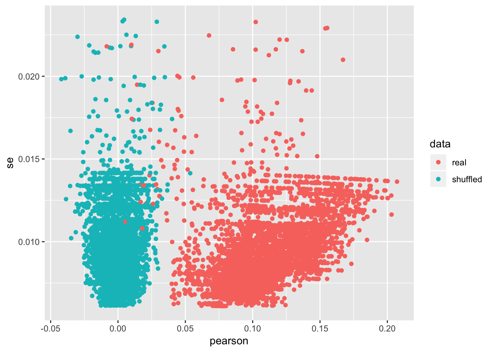
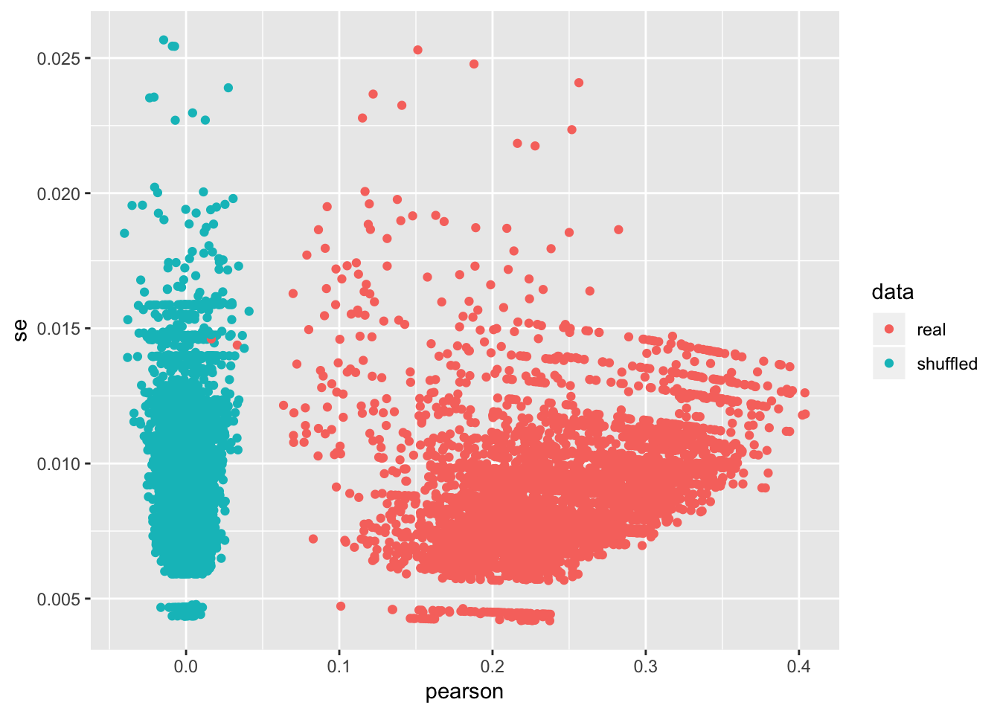

Last updated: 2019-07-09
Checks: 5 1
Knit directory: gtex-gwas-analysis/
This reproducible R Markdown analysis was created with workflowr (version 1.3.0). The Checks tab describes the reproducibility checks that were applied when the results were created. The Past versions tab lists the development history.
The R Markdown is untracked by Git. To know which version of the R Markdown file created these results, you’ll want to first commit it to the Git repo. If you’re still working on the analysis, you can ignore this warning. When you’re finished, you can run wflow_publish to commit the R Markdown file and build the HTML.
Great job! The global environment was empty. Objects defined in the global environment can affect the analysis in your R Markdown file in unknown ways. For reproduciblity it’s best to always run the code in an empty environment.
The command set.seed(20190312) was run prior to running the code in the R Markdown file. Setting a seed ensures that any results that rely on randomness, e.g. subsampling or permutations, are reproducible.
Great job! Recording the operating system, R version, and package versions is critical for reproducibility.
Nice! There were no cached chunks for this analysis, so you can be confident that you successfully produced the results during this run.
Great! You are using Git for version control. Tracking code development and connecting the code version to the results is critical for reproducibility. The version displayed above was the version of the Git repository at the time these results were generated.
Note that you need to be careful to ensure that all relevant files for the analysis have been committed to Git prior to generating the results (you can use wflow_publish or wflow_git_commit). workflowr only checks the R Markdown file, but you know if there are other scripts or data files that it depends on. Below is the status of the Git repository when the results were generated:
Ignored files:
Ignored: .Rhistory
Ignored: .Rproj.user/
Ignored: analysis/.Rhistory
Untracked files:
Untracked: analysis/gwas_vs_qtl_lmer.Rmd
Untracked: docs/figure/gwas_vs_qtl_lmer.Rmd/
Note that any generated files, e.g. HTML, png, CSS, etc., are not included in this status report because it is ok for generated content to have uncommitted changes.
There are no past versions. Publish this analysis with wflow_publish() to start tracking its development.
library(dplyr)
Attaching package: 'dplyr'The following objects are masked from 'package:stats':
filter, lagThe following objects are masked from 'package:base':
intersect, setdiff, setequal, unionlibrary(ggplot2)
library(pander)Exploring why lmer gives warning on summarizing estimates. Load data from Rodrigo.
df_eqtl = readRDS('output/eqtl_gwas_correlation_with_ci.rds')
df_sqtl = readRDS('output/sqtl_gwas_correlation_with_ci.rds')
df_eqtl = df_eqtl %>% mutate(se = (pearson-ci95_lower)/1.96)
df_sqtl = df_sqtl %>% mutate(se = (pearson-ci95_lower)/1.96)Summary and plot est and est_se
df_eqtl %>% ggplot() + geom_point(aes(x = pearson, y = se, color = data))
df_sqtl %>% ggplot() + geom_point(aes(x = pearson, y = se, color = data))
lmermeta_est_across_all = function(trait, tissue, est, est_sd, scale = T) {
weight = 1 / est_sd ^ 2
if(scale == T) {
weight = weight / mean(weight)
}
mod = lme4::lmer(est ~ 1 + (1 | trait) + (1 | tissue), weights = weight)
est = summary(mod)$coefficients
return(data.frame(est = est[1, 1], est_sd = est[1, 2]))
}
meta_est_across_all_v2 = function(trait, tissue, est, est_sd, scale = T) {
weight = 1 / est_sd ^ 2
if(scale == T) {
weight = weight / mean(weight)
}
mod = lme4::lmer(est ~ 1 + (1 | trait), weights = weight)
est = summary(mod)$coefficients
return(data.frame(est = est[1, 1], est_sd = est[1, 2]))
}df_here = df_eqtl %>% filter(data == 'real')
rep = data.frame()
for(scale in c(F, T)) {
message('scale = ', scale, ' model = (1 | trait) + (1 | tissue)')
mod = meta_est_across_all(df_here$phenotype, df_here$tissue, df_here$pearson, df_here$se, scale = scale)
rep = rbind(rep, mod %>% mutate(type = '(1|trait)+(1|tissue)', scale = scale))
message('scale = ', scale, ' model = (1 | trait)')
mod_v2 = meta_est_across_all_v2(df_here$phenotype, df_here$tissue, df_here$pearson, df_here$se, scale = scale)
rep = rbind(rep, mod_v2 %>% mutate(type = '(1|trait)', scale = scale))
}scale = FALSE model = (1 | trait) + (1 | tissue)Warning in checkConv(attr(opt, "derivs"), opt$par, ctrl = control$checkConv, : Model is nearly unidentifiable: very large eigenvalue
- Rescale variables?scale = FALSE model = (1 | trait)Warning in checkConv(attr(opt, "derivs"), opt$par, ctrl = control$checkConv, : Model failed to converge with max|grad| = 0.00241034 (tol = 0.002, component 1)
Warning in checkConv(attr(opt, "derivs"), opt$par, ctrl = control$checkConv, : Model is nearly unidentifiable: very large eigenvalue
- Rescale variables?scale = TRUE model = (1 | trait) + (1 | tissue)scale = TRUE model = (1 | trait)rep %>% pander| est | est_sd | type | scale |
|---|---|---|---|
| 0.1098 | 0.003371 | (1|trait)+(1|tissue) | FALSE |
| 0.1035 | 0.001951 | (1|trait) | FALSE |
| 0.1098 | 0.003371 | (1|trait)+(1|tissue) | TRUE |
| 0.1035 | 0.001951 | (1|trait) | TRUE |
df_here = df_sqtl %>% filter(data == 'real')
rep = data.frame()
for(scale in c(F, T)) {
message('scale = ', scale, ' model = (1 | trait) + (1 | tissue)')
mod = meta_est_across_all(df_here$phenotype, df_here$tissue, df_here$pearson, df_here$se, scale = scale)
rep = rbind(rep, mod %>% mutate(type = '(1|trait)+(1|tissue)', scale = scale))
message('scale = ', scale, ' model = (1 | trait)')
mod_v2 = meta_est_across_all_v2(df_here$phenotype, df_here$tissue, df_here$pearson, df_here$se, scale = scale)
rep = rbind(rep, mod_v2 %>% mutate(type = '(1|trait)', scale = scale))
}scale = FALSE model = (1 | trait) + (1 | tissue)Warning in checkConv(attr(opt, "derivs"), opt$par, ctrl = control$checkConv, : Model is nearly unidentifiable: very large eigenvalue
- Rescale variables?scale = FALSE model = (1 | trait)Warning in checkConv(attr(opt, "derivs"), opt$par, ctrl = control$checkConv, : Model is nearly unidentifiable: very large eigenvalue
- Rescale variables?scale = TRUE model = (1 | trait) + (1 | tissue)scale = TRUE model = (1 | trait)rep %>% pander| est | est_sd | type | scale |
|---|---|---|---|
| 0.2394 | 0.006377 | (1|trait)+(1|tissue) | FALSE |
| 0.2266 | 0.004152 | (1|trait) | FALSE |
| 0.2394 | 0.006377 | (1|trait)+(1|tissue) | TRUE |
| 0.2266 | 0.004152 | (1|trait) | TRUE |
df_here = df_eqtl %>% filter(data == 'shuffled')
rep = data.frame()
for(scale in c(F, T)) {
message('scale = ', scale, ' model = (1 | trait) + (1 | tissue)')
mod = meta_est_across_all(df_here$phenotype, df_here$tissue, df_here$pearson, df_here$se, scale = scale)
rep = rbind(rep, mod %>% mutate(type = '(1|trait)+(1|tissue)', scale = scale))
message('scale = ', scale, ' model = (1 | trait)')
mod_v2 = meta_est_across_all_v2(df_here$phenotype, df_here$tissue, df_here$pearson, df_here$se, scale = scale)
rep = rbind(rep, mod_v2 %>% mutate(type = '(1|trait)', scale = scale))
}scale = FALSE model = (1 | trait) + (1 | tissue)Warning in checkConv(attr(opt, "derivs"), opt$par, ctrl =
control$checkConv, : Model failed to converge with max|grad| = 0.0707399
(tol = 0.002, component 1)Warning in checkConv(attr(opt, "derivs"), opt$par, ctrl = control$checkConv, : Model is nearly unidentifiable: very large eigenvalue
- Rescale variables?scale = FALSE model = (1 | trait)Warning in checkConv(attr(opt, "derivs"), opt$par, ctrl = control$checkConv, : Model failed to converge with max|grad| = 0.0328755 (tol = 0.002, component 1)
Warning in checkConv(attr(opt, "derivs"), opt$par, ctrl = control$checkConv, : Model is nearly unidentifiable: very large eigenvalue
- Rescale variables?scale = TRUE model = (1 | trait) + (1 | tissue)scale = TRUE model = (1 | trait)rep %>% pander| est | est_sd | type | scale |
|---|---|---|---|
| 8.599e-05 | 0.0001456 | (1|trait)+(1|tissue) | FALSE |
| 8.838e-05 | 0.0001437 | (1|trait) | FALSE |
| 8.599e-05 | 0.0001456 | (1|trait)+(1|tissue) | TRUE |
| 8.838e-05 | 0.0001437 | (1|trait) | TRUE |
df_here = df_sqtl %>% filter(data == 'shuffled')
rep = data.frame()
for(scale in c(F, T)) {
message('scale = ', scale, ' model = (1 | trait) + (1 | tissue)')
mod = meta_est_across_all(df_here$phenotype, df_here$tissue, df_here$pearson, df_here$se, scale = scale)
rep = rbind(rep, mod %>% mutate(type = '(1|trait)+(1|tissue)', scale = scale))
message('scale = ', scale, ' model = (1 | trait)')
mod_v2 = meta_est_across_all_v2(df_here$phenotype, df_here$tissue, df_here$pearson, df_here$se, scale = scale)
rep = rbind(rep, mod_v2 %>% mutate(type = '(1|trait)', scale = scale))
}scale = FALSE model = (1 | trait) + (1 | tissue)singular fitscale = FALSE model = (1 | trait)singular fitscale = TRUE model = (1 | trait) + (1 | tissue)singular fitscale = TRUE model = (1 | trait)singular fitrep %>% pander| est | est_sd | type | scale |
|---|---|---|---|
| -3.086e-05 | 0.0001409 | (1|trait)+(1|tissue) | FALSE |
| -2.863e-05 | 0.0001331 | (1|trait) | FALSE |
| -3.086e-05 | 0.0001409 | (1|trait)+(1|tissue) | TRUE |
| -2.863e-05 | 0.0001331 | (1|trait) | TRUE |
sessionInfo()R version 3.4.0 (2017-04-21)
Platform: x86_64-apple-darwin16.5.0 (64-bit)
Running under: macOS 10.13.6
Matrix products: default
BLAS: /System/Library/Frameworks/Accelerate.framework/Versions/A/Frameworks/vecLib.framework/Versions/A/libBLAS.dylib
LAPACK: /System/Library/Frameworks/Accelerate.framework/Versions/A/Frameworks/vecLib.framework/Versions/A/libLAPACK.dylib
locale:
[1] en_US.UTF-8/en_US.UTF-8/en_US.UTF-8/C/en_US.UTF-8/en_US.UTF-8
attached base packages:
[1] stats graphics grDevices utils datasets methods base
other attached packages:
[1] pander_0.6.3 ggplot2_3.1.0 dplyr_0.8.3
loaded via a namespace (and not attached):
[1] Rcpp_1.0.1 nloptr_1.2.1 pillar_1.3.1 compiler_3.4.0
[5] git2r_0.25.2 plyr_1.8.4 workflowr_1.3.0 tools_3.4.0
[9] digest_0.6.18 lme4_1.1-19 nlme_3.1-137 lattice_0.20-35
[13] evaluate_0.13 tibble_2.0.1 gtable_0.2.0 pkgconfig_2.0.2
[17] rlang_0.4.0 Matrix_1.2-11 rstudioapi_0.10 yaml_2.2.0
[21] xfun_0.6 withr_2.1.2 stringr_1.4.0 knitr_1.22
[25] fs_1.3.1 rprojroot_1.3-2 grid_3.4.0 tidyselect_0.2.5
[29] glue_1.3.1 R6_2.4.0 rmarkdown_1.12 minqa_1.2.4
[33] purrr_0.3.2 magrittr_1.5 MASS_7.3-47 splines_3.4.0
[37] backports_1.1.4 scales_1.0.0 htmltools_0.3.6 assertthat_0.2.0
[41] colorspace_1.4-0 labeling_0.3 stringi_1.2.4 lazyeval_0.2.0
[45] munsell_0.5.0 crayon_1.3.4